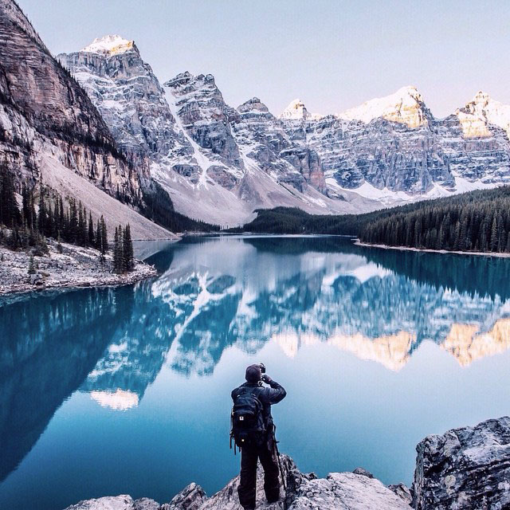
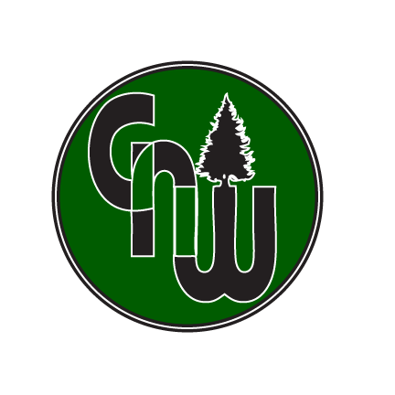
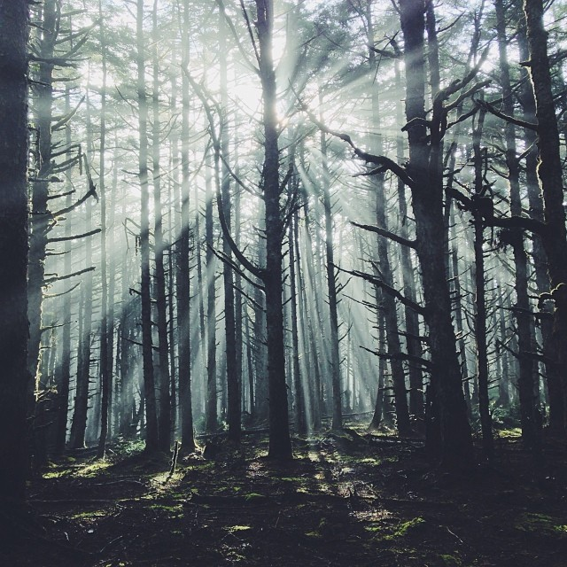

|
|
| Home | ||
 |
 |
 |
Here at Great Northwest Designs, we are dedicated to providing you, the people of the Northwest United States, with the highest quality clothing and accessories possible. Our company was started by two geniuses who had the bright idea that making clothing and accessories to promote our great region is a wonderful idea. By purchasing our product, you are supporting a local organization with a global cause. That is the whole goal of GNW, do something people will love, and also give back to the community and the whole world. Here at GNW, we all love what we do, but we love even more the reactions of people when they see what we do and why. Another great thing about our company is that all of our products are made of 100% organic material. Not only do we care about the community, we also care about the environment; hence, the name The Great Northwest. titlehough we are a relatively new company, we are seeing wonderful responses to our products and also our community efforts. To GNW, appreciating the great region we live in is a way of life, and we want to pass that on to you, not only our customers, but also our neighbors and friends. Also, check out our Instagram page for some great photos of nature and our newest designs. Space Needle
The space needle in Seattle, Washington stands 605 feet tall. Its tallest point is the legacy light which is lit for special occasions. Its brilliant skyward beam has marked every milestone since 2000. Amazingly, there is a restaurant at the top of the Space Needle, which slowly gives customers a view of the entire city. It takes a person 848 steps to reach the top, but luckily there is also an elevator to speed up the process. Cascade Mountains
The Cascade Mountain range spans from British Columbia all the way down to northern California. The tallest point is 14,409 feet tall, and the total area that the mountains occupy is 58,484 square miles. A few notable mountains within the range are Mount Rainier, Mount St. Helens, Mound Hood, Mount Baker, and Mount Adams. One of the most popular passes is the Snoqualmie Pass, which also is home to The Summit at Snoqualmie, a large ski area that provides alpine skiing and snowboarding, Nordic skiing, and winter tubing. Hoh Rainforest
The Hoh Rainforest is located on the Olympic Peninsula in western Washington. It is one of the largest temperate rainforests in the U.S. The Hoh Rainforest is in the Olympic National Park. Annually, the rainforest gets about 140 to 170 inches of precipitation. The result is a lush, green canopy of both coniferous and deciduous species. Mosses and ferns that blanket the surfaces add another dimension to the enchanting qualities of the rainforest.
|
||
June 5, 2015 9:41 AM